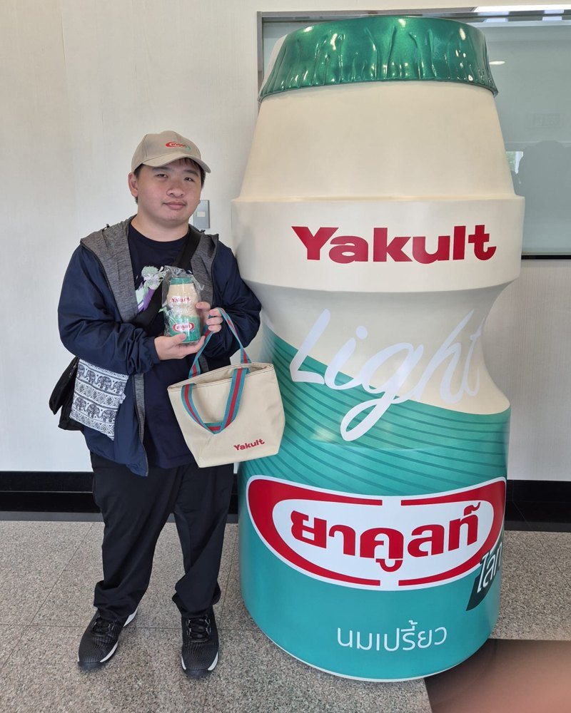

Open to internships & game jams
Hi, I'm Jun Qi.
I build things people enjoy using.
Applied AI & Analytics student at Nanyang Polytechnic, aspiring game developer, based in Singapore.

- 3 yrs
- IT at ITE
- 11
- Projects built
- 3
- Volunteer roles
01 / About
From ITE to Applied AI, with games as the end goal.
I'm a Singapore-based developer who started with three years of IT Applications Development at ITE College Central and is now studying Applied AI & Analytics at Nanyang Polytechnic.
Not all of my learning has happened behind a screen. I've volunteered as an NDP Motivator since 2023 and worked bar shifts at Marina Bay Sands. Both taught me to stay calm, think quickly and keep people at the centre of what I do.
The goal
I want to become a game developer. It started with modding characters into MUGEN as a kid, and in secondary school the first game I built in Scratch won 3rd place in a national Scratch game competition. Now I want to combine AI with player-first design to build worlds people want to get lost in.
Off-screen, you'll find me on the badminton court. Every developer needs a good smash to clear their head. 🏸
02 / Selected work
Things I've built
-
Jan – Apr 2025
Software Engineer / Support @ Skubbs
- Diagnosed and triaged bugs in internal member portals, working with engineers to ship permanent fixes.
- Documented recurring issues and built a troubleshooting guide that cut ticket resolution time.
-
2024 – 2025
Bartender @ Marina Bay Sands
- Delivered fast, accurate service in a high-volume luxury venue.
- Kept orders flowing smoothly during peak shifts while meeting strict operational standards.
-
Sep 2023 – Apr 2024
Project Coordinator (Intern) @ Skubbs
- Bridged clients and developers across several web projects running at the same time.
- Turned client feedback into clear tasks, delivering within six-week timelines.
- Ran UI/UX testing before each launch to catch issues early.
Education
Diploma in Applied AI & Analytics
Nanyang Polytechnic · 2025 – 2028
Higher Nitec in IT Applications Development
ITE College Central · 2022 – 2025
Toolkit
Design & media
Certifications
- Anthropic — AI Fluency: Framework & Foundations
- Alibaba Cloud — AI Journey with Alibaba Cloud
- AWS Training & Certification
- WTH 2025 — Participant
Languages
English (native) · Mandarin (conversational)
04 / Growth journey
Beyond the code
The three volunteering experiences that shaped me most.
Achievements
I wasn't always a top student.
In primary school, I needed extra tutoring just to keep up. A setback in Primary 5 turned out to be my turning point: a change of environment helped everything click, and I climbed into the top 5 of my class. I've earned an award every year since.
See my story & certificates →- Sec 3rd place, national Scratch game competition
- ×2 Edusave Scholarship (2019, 2020)
- ×2 EAGLES Award for leadership & service (2021, 2023)
- ×4 Edusave Merit Bursary (2018, 2021, 2022, 2023)
- ×3 Edusave Certificate of Academic Achievement (2018, 2022, 2023)
05 / Contact
Let's build something together.
Open to internships, collaborations and game jams. Drop me a message. I usually reply within a couple of days.
kokjunqi@gmail.com